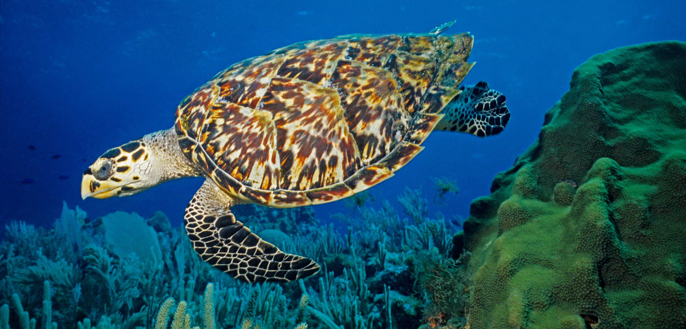

The Hawksbill Turtle [Eretmochelys imbricata]
|  | |
|---|---|
DescriptionHawkbills are a group of Sea Turtles which are named for their narrow mouth resembling the beak of a hawk. This adaptation enables them to find food sources in hard to reach crack and crevices. They are the only sea turtle species with the ability to survive on a diet consisting mainly of sponges. They can also be identified by their distincitve overlapping scale pattern that from a serrated looking edge.Furthermore they have a pair of claws adorning each flipper. Male hawksbills have longer claws, thicker tails, and somewhat brighter coloring than females. |
Common nesting locations of the Hawksbill turtle in Sri Lanka  |
The Loggerhead Turtle [Caretta caretta]
DescriptionLoggerhead turtles are named after their large heads which accommodate highly powerful jaw muscles that enable them to take hard-shelled prey such as sea urchins and clams as their primary foor source. The way these turtles eat their hard-shelled food recycles crucial nutrients and helps maintain the equilibrium of the sediments on the ocean floor. In adults and sub-adults, the top shell is somewhat heart-shaped and reddish-brown, while the bottom shell is often a pale yellowish tint. Typically, the top of the neck and the bottom of the flippers have a medium to pale yellow color and a dull to reddish brown color, respectively. |
Common nesting locations of the Loggerhead turtle in Sri Lanka  |
|---|---|
The Leatherback Turtle [Dermochelys coriacea
DescriptionThe leatherback sea turtle, often known as the lute turtle or the leathery turtle,is identified as the largest among all living turtles and the heaviest non-crocodilian reptile. They can reach lengths of upto 1.8 metres and also easily weigh over 500Kg. Its absence of a bony shell and a body coated in oily flesh and flexible, leather-like skin, after which it is named, immediately set it apart from other contemporary sea turtles.Also they have the most hydrodynamic body of any sea turtle, with a large, teardrop-shaped body. A large pair of front flippers powers the turtles through the water. |
Common nesting locations of the Leatherback turtle in Sri Lanka  |
|---|---|
The Green Turtle [Chelonia mydas
 |
|
|---|---|
DescriptionThe biggest marine turtle with a hard shell is the green sea turtle. Being herbivorous and mostly consuming seagrasses and algae sets them apart from other sea turtles. Their name derives from the color of their fat, which is green due to their diet.They feature a pair of massive, paddle-like flippers on either side of their dorsoventrally flattened body, which is protected by a gigantic, teardrop-shaped shell. Green turtle adults may reach a length of 1.5 meters and weigh, on average, between 68 and 190 kilograms.However exceptional specimens can weigh 315 kg or even more, with the largest known one having weighed 395 kg and measured 153 cm in length. |
Common nesting locations of the Green turtle in Sri Lanka  |
The Olive Ridley Turtle
 |
|
|---|---|
DescriptionThe olive ridley sea turtle, which reaches a length of about 61 cm, gets its common name from its olive-colored, rounded, heart-shaped carapace. The species is the most prevalent and second-smallest sea turtle in the world. An olive ridley's four flippers each have one or two claws.The tiniest sea turtle, the olive ridley, may weigh up to 100 pounds and only has a shell length of around 2 feet. |
Common nesting locations of the Olive Ridley turtle in Sri Lanka  |
Locations of the common nesting beaches of the five sea turtles found in Sri Lanka
| Species/Category of Turtle | The Hawksbill Turtle | The Loggerhead Turtle | The Leatherback Turtle | The Green Turtle | The Olive Ridley Turtle | The Kemp's Ridley Turtle | The Flatback Turtle |
|---|---|---|---|---|---|---|---|
| Scentific/Species Name | Eretmochelys imbricata | Caretta caretta | Dermochelys coriacea | Chelonia mydas | Lepidochelys olivacea | Lepidochelys kempii | Natator depressus |
| IUCN Red List Status | Critically Endangered | Vulnerable | Vulnerable | Endangered | Vulnerable | Critically Endangered | Data Deficient |
| Feeding Habits | Carnivorous | Omnivorous | Gelantinivorous - eats only invertibrates | Herbivorous | Omnivorous | Carnivorous | Omnivorous |
| Present in Sri Lanka | Yes | Yes | Yes | Yes | Yes | No | No |